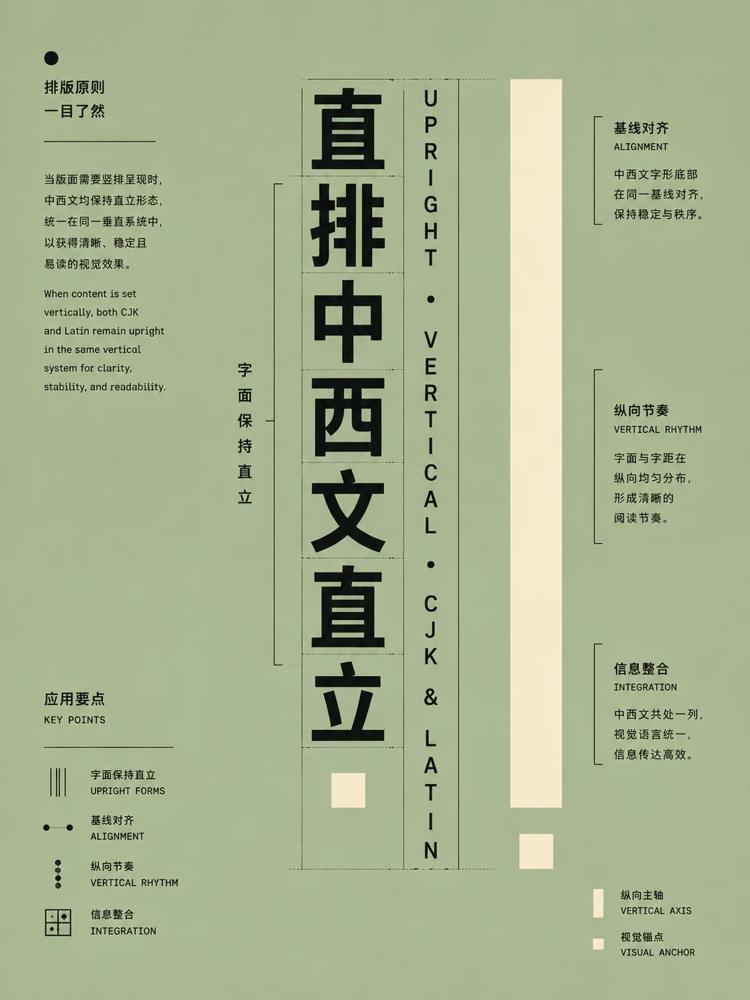

适合直立的场景
- 短大写缩写与代码：1–5 个字符，如 W3C、AI、UI、NO.04、B1。
- 品牌主词与书脊卷号：精装书脊、茶酒包装、美术馆立柱、建筑竖招牌上的 1–2 个简短大写词。
- 装饰性双语副标：像 219 原海报一样放在汉字主柱旁，借圆点 • 切分短词，先看整体气势再细读英文。
UPRIGHT • VERTICAL • CJK & LATIN
当版面需要竖排呈现时，中西文均保持直立形态，统一在同一垂直系统中，以获得清晰、稳定且易读的视觉效果。
When content is set vertically, both CJK and Latin remain upright in the same vertical system for clarity, stability, and readability.
CENTRAL AXIS & BASELINE ALIGNMENT
原海报要点 「基线对齐：中西文字形底部在同一基线对齐，保持稳定与秩序。」
横排时，所有字母都踩在同一条水平底线（基线）上；但竖排逐字直立以后，字母上下叠放，互相之间并没有连续的水平底线。真正把一列直立中西文稳住的，其实是两条配合工作的基准线：
试着在旁边的剖视器里切换三种对准方式，开启辅助字格，亲眼看一看 I 和 L 为什么最容易把一列直立西文拉歪。
WHY ALL-CAPS HOLD VERTICAL RHYTHM
原海报要点 「纵向节奏：字面与字距在纵向均匀分布，形成清晰的阅读节奏。」
美国字体设计教育家 Ellen Lupton 在《Thinking with Type》（2004 年首版，2024 年第三版）中点破过一个根本前提：拉丁字母天生是为横向并肩站立而设计的，并不是为上下叠罗汉设计的。
一旦把小写字母竖直叠起来，三件事会同时出错：第一，b、d、h、k、l、t 的上伸部顶破上缘；第二，g、j、p、q、y 的下伸部戳进下一行；第三，a、e、o、r 又矮了一截。结果就是每对相邻字母之间的留白宽窄失控，视觉节拍瞬间稀碎。
换成全大写字母，所有字符共享统一的大写高度与齐平底边，像一组规整的石块。再配上笔画粗细均匀、左右结构对称的几何无衬线体，就能把直立西文的方块感拉到最接近汉字方格的程度。
拖动旁边的步距游标可以发现，经验上纵向步距落在 1.25×–1.55× 大写字高之间时，每格留白清楚、词块仍连贯；低于 1.15× 会上下贴撞，高于 1.65× 则开始散成孤立圆点。
ORIGIN, SIGNAGE & W3C STANDARDS
直排中西文直立不是某位设计师凭空发明的新花样，而是东亚竖排传统、近代竖式招牌与近三十年数字排版标准汇流的结果：传统汉字书脊与匾额天然以方块直落成列；近代城市的狭长竖招牌与剧场灯箱为了让人不用歪头看清店名，也习惯把简短全大写英文逐字直叠。到了电子出版与网页时代，行业标准才把「什么时候直立、什么时候侧转」写成可互换的规范。
writing-mode: vertical-rl;
text-orientation: upright;
letter-spacing: 0.14em;TWO ARCHITECTURAL INTEGRATION MODES
原海报要点 「信息整合：中西文共处一列，视觉语言统一，信息传达高效。」
实战里，「直排中西文直立」有两条经典路线：窄幅载体（如 24mm 精装书脊、细长立牌）往往采用同列直立混排，汉字与短大写英文共用同一根纵向中轴；较宽的礼盒贴签、展厅立柱与 219 原海报则偏爱双轨并置，左侧汉字主轴撑气势，右侧细列直立大写西文做双语注解，底端再压一颗实心方形视觉锚点把两列钉牢。
同一小类的其他竖排与混排方案各有专攻，本页不展开重讲，需要时可直接跳转对比：
WHEN IT SHINES & WHEN TO STOP
原海报总述写「以获得清晰、稳定且易读的视觉效果」。对简短标识来说完全成立；但拉丁文横排时靠的是整个单词的轮廓形状快速辨认，直立叠排后只能逐字母拼读。只要英文超过大约 6–8 个字符，直立反而比转向 90° 更慢更累。
SINGLE-VARIABLE VISUAL CHECK
ORIGINAL POSTER & KEYWORDS

贯穿顶底的垂直骨线，把汉字方格与直立大写字母统摄在同一列序之中。
收束于列尾的暖奶油方印，稳稳接住自上而下的阅读动势并锁平列底。
W3C CSS Writing Modes 3 (2019) · Unicode UAX #50 (2017) · W3C JLReq · W3C CLReq